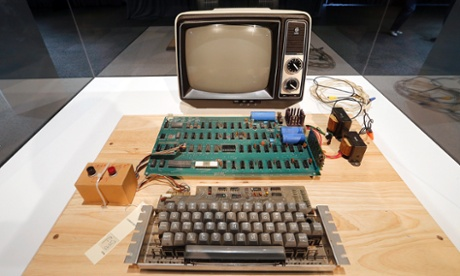
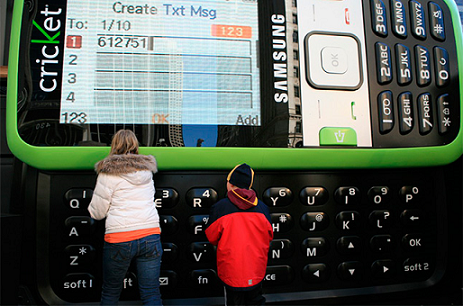

Дополнительная информация
Факт 1
В конце 90-х одной из самых мощных интернет-компаний была Excite. Она владела
собственным поисковым сервисом, веб-почтой, сервисом обмена мгновенным
сообщениями и другими службами. В начале 1999 года Брин и Пейдж поняли, что
бизнес слишком сильно отвлекает их от учёбы, и решили от него избавиться. Они
предложили главе Excite Джорджу Беллу (George Bell) купить Google за миллион долларов, но он отверг предложение.

Факт 2
Первый компьютер Apple, Apple I был произведен 1976 года, также имел ценник $666.
Забавно, что люди изначально подумали, что это отссылка к сатане.
Но Стив Возняк объяснил, что дьявол тут совсем не при чем, а такую цену он установил,
потому что решил, что три одинаковые цифры будет удобно печатать!

Факт 3
Нет, это не Galaxy Note. В 2009 году Samsung и Cricket Communications сделали
увеличенную копию Samsung SCH-r45 и установили её на одной из улиц Чикаго.
Разумеется, в рамках рекламной кампании. Размеры гиганта составили:
4,57х3,42х0,74 метра. А в остальном — конструкция работала как обычный телефон.
